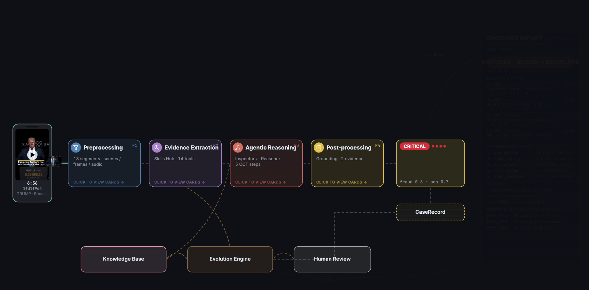
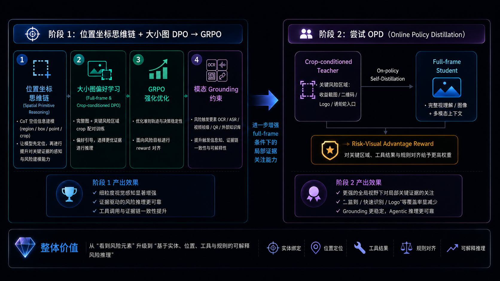
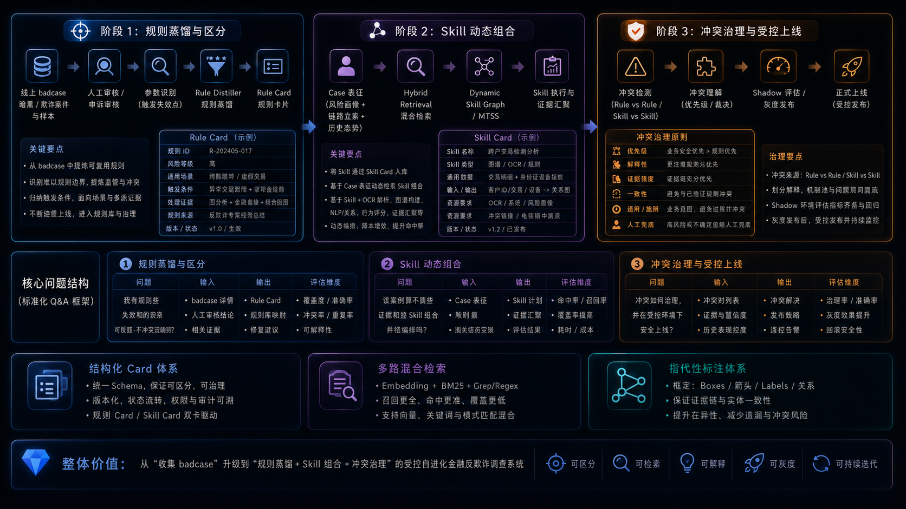

OmniInvestigator
Agentic Risk Reasoning · Financial Anti-Fraud Risk Investigation Agent
01 · End-to-End Risk Investigation Flow

Multimodal Input → Preprocessing → Evidence Extraction → Agentic Reasoning → Grounded Report.
核心不是工具串联，而是 VLM 动态工具决策、证据交叉验证、知识图谱关联与风险推理。
02 · Agentic Post-Training Practice

Phase 1 Position-Coordinate CoT + DPO → GRPO，通过模态 Grounding 约束提升 VLM 细粒度视觉感知能力。
Phase 2 OPD Distillation 将局部关键证据的感知优势蒸馏回 full-frame VLM。
03 · Controlled Self-Evolution Practice

规则蒸馏 → Skill 动态组合 → 冲突治理与受控上线。
通过 Shadow Eval、灰度发布、人审兜底和版本治理实现受控迭代，非自动生成直接上线。